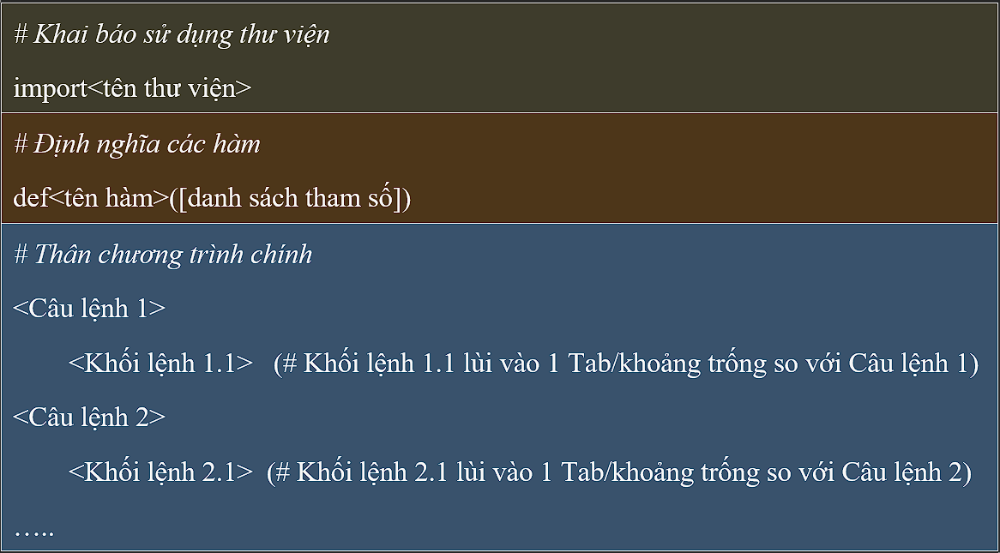

BÀI 1: TỔNG QUAN VỀ NGÔN NGỮ LẬP TRÌNH PYTHON
1.1. Giới thiệu
Python là một ngôn ngữ lập trình bậc cao hướng đối
tượng được Guido van Rossum cùng các cộng sự tạo ra năm 1991 dành cho
mục đích lập trình đa chức năng. Python được thiết kế với ưu điểm mạnh
là câu lệnh ngắn gọn, dễ nhớ, dễ hiểu. Cấu trúc chương trình của Python
rõ ràng, dễ đọc và dễ viết hơn rất nhiều so với những ngôn ngữ lập trình
khác (như C, C++, Java, C#, PHP). Do đó Python được coi là một trong
những ngôn ngữ lập trình thuận tiện nhất cho người mới học lập tình. Đây
là ngôn ngữ lập trình thông dịch, có thể chạy trên nhiều hệ điều hành
khác nhau như: Windows, Mac OS, Linux.
Python hoàn toàn tạo kiểu động và dùng cơ chế cấp
phát bộ nhớ tự động, là ngôn ngữ có mã nguồn mở và đang có cộng đồng
người dùng lớn.
1.2.Môi trường lập trình python
Các cách cài đặt cho từng hệ điều hành
1.3.Cấu trúc chương trình python
Cấu trúc chương trình Python gồm 3 phần chính sau:
Trong đó:
-
<tên thư viện>: Là tên thư viện người dùng có sử dụng các hàm, lớp để phục vụ các công việc trong chương trình, ví dụ thư viện math, random, numpy, mathplotlib,…
-
<tên hàm>:Là tên hàm (chương trình con) do người dùng định nghĩa.
-
<chương trình chính>:Chứa các khối lệnh, thân chương trình chính.Khoảng trống khối lệnh cần thụt vào so với lệnh chứa nó, thông thường hay dùng một khoảng Tab
1.4. Ghi chú
Không chỉ ngôn ngữ Python, các ngôn ngữ lập trình đều có phần ghi chú, nó dùng để giải thích cho dòng lệnh hoặc khối lệnh trong Python, chương trình biên dịch, thông dịch của Python sẽ bỏ qua các ghi chú này. Ghi chú giúp cho người đọc chương trình dễ hiểu hơn.
-
Ghi chú trên một dòng, sử dụng ký tự # trước chuỗi cần ghi chú
Ví dụ:#Hiển thị ra màn hình chuỗi Hello World
print("Hello World") -
Ghi chú nhiều dòng, sử dụng """ """(ba dấu ngoặc nháy đôi liên tiếp để bắt đầu và dấu ngoặc nháy đôi liên tiếp để kết thúc) hoặc "' "' (ba cặp dấu nháy đơn liên tiếp để bắt đầu và ba cặp dấu nháy đơn liên tiếp để kết thúc)
Ví dụ:"""Đây là chú thích trên nhiều dòng In dòng chữ Quantrimang.com trong Python"""